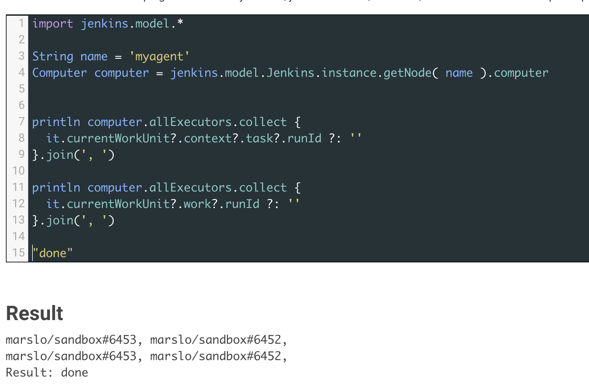

get information
get all
get all agents including Jenkins master:
jenkins.model.Jenkins.instance.computersjenkins.model.Jenkins.instance.get().computers
jenkins.model.Jenkins.instance.computers.each { agent ->
println "${agent.displayName} : ${agent.class} : ${agent.class.superclass}"
println " >> is master : ${jenkins.model.Jenkins.MasterComputer.isInstance(agent)}"
println " >> is cloud : ${hudson.slaves.AbstractCloudComputer.isInstance(agent)} "
}
- or
jenkins.model.Jenkins.instance.get().computers.each { agent -> println "${agent.displayName} : ${agent.class} : ${agent.class.superclass}" println " >> is master : ${jenkins.model.Jenkins.MasterComputer.isInstance(agent)}" println " >> is cloud : ${hudson.slaves.AbstractCloudComputer.isInstance(agent)} " }
Computer and Node
hudson.model.Computer->hudson.model.Nodeviacomputer.setNode()hudson.model.Node->hudson.model.Computervianode.toComputer()
example for Computer Object
get description
jenkins.model.Jenkins.instance.getNode('<AGENT_NAME>').toComputer().descriptionget all info
import hudson.slaves.ComputerLauncher String agentName = <AGENT_NAME> jenkins.model.Jenkins.instance.computers.findAll { computer -> agentName == computer.name }.each { computer -> String moreinfo = computer.online ? "properties : ${computer.getSystemProperties().collect { k, v -> "$k=$v" }.join('\n\t\t\t>>> ')}" : " logs : ${computer.getLog()}" ComputerLauncher launcher = computer.node.launcher println """ >> ${computer.displayName} : class : ${computer.getClass()} class : ${computer.class.superclass?.simpleName} online? : ${computer.online} description : ${computer.description} connectTime : ${computer.connectTime} | ${new Date(computer.connectTime).format("yyyy-MM-dd'T'HH:mm:ss.SSS'Z'")} idleStartMilliseconds : ${computer.idleStartMilliseconds} | ${new Date(computer.idleStartMilliseconds).format("yyyy-MM-dd'T'HH:mm:ss.SSS'Z'")} offlineCauseReason : ${computer.offlineCauseReason} executor : ${computer.numExecutors} | ${computer.node.numExecutors} launcher : ${launcher.host} | ${launcher.port} | ${launcher.credentialsId} ${moreinfo} """ }- result
>> AGENT_NAME : class : class hudson.slaves.SlaveComputer class : Computer online? : false description : marslo test agent offline connectTime : 1620478291102 | 2021-05-08T05:51:31.102Z idleStartMilliseconds : 1707980922716 | 2024-02-14T23:08:42.716Z offlineCauseReason : This agent is offline because Jenkins failed to launch the agent process on it. executor : 1 launcher : 1.2.3.4 | sample.com | 22 | NEW_CREDENTIAL logs : SSHLauncher{host='1.2.3.4', port=22, credentialsId='NEW_CREDENTIAL', jvmOptions='', javaPath='', prefixStartSlaveCmd='', suffixStartSlaveCmd='', launchTimeoutSeconds=30, maxNumRetries=5, retryWaitTime=30, sshHostKeyVerificationStrategy=hudson.plugins.sshslaves.verifiers.NonVerifyingKeyVerificationStrategy, tcpNoDelay=true, trackCredentials=true} [05/08/21 05:51:31] [SSH] Opening SSH connection to 1.2.3.4:22. connect timed out SSH Connection failed with IOException: "connect timed out", retrying in 30 seconds. There are 5 more retries left. connect timed out ...
- result
example for Node Object
import hudson.slaves.*
DumbSlave agent = jenkins.model.Jenkins.instance.getNode( 'AGEENT_NAME' )
ComputerLauncher launcher = agent.launcher
println """
display name : ${agent.getDisplayName()}
node name : ${agent.getNodeName()}
description : ${agent.getNodeDescription()}
executor : ${agent.getNumExecutors()}
label string : ${agent.getLabelString()}
node mode : ${agent.getMode()}
hold off launch : ${agent.isHoldOffLaunchUntilSave()}
launcher : ${launcher.host} | ${launcher.port} | ${launcher.credentialsId}
"""
- result
display name : AGEENT_NAME node name : AGEENT_NAME description : marslo test agent offline executor : 1 label string : node mode : NORMAL hold off launch : true launcher : 1.2.3.4 | sample.com | 22 | NEW_CREDENTIAL
setup
hold off launchvia:agent.holdOffLaunchUntilSave = true
node->computerString agent = 'AGEENT_NAME' jenkins.model.Jenkins.instance.getNode(agent).toComputer().isOnline() // or hudson.model.Hudson.instance.getNode(agent).toComputer().isOnline() // or jenkins.model.Jenkins.instance.getNode(agent).computer.isOnline()or get log
println jenkins.model.Jenkins.instance.getNode( 'AGEENT_NAME' ).toComputer().getLog() // result SSHLauncher{host='1.2.3.4', port=22, credentialsId='DevOpsSSHCredential', jvmOptions='', javaPath='', prefixStartSlaveCmd='', suffixStartSlaveCmd='', launchTimeoutSeconds=30, maxNumRetries=5, retryWaitTime=30, sshHostKeyVerificationStrategy=hudson.plugins.sshslaves.verifiers.NonVerifyingKeyVerificationStrategy, tcpNoDelay=true, trackCredentials=true} [05/24/21 03:59:16] [SSH] Opening SSH connection to 1.2.3.4:22. connect timed out SSH Connection failed with IOException: "connect timed out", retrying in 30 seconds. There are 5 more retries left.
get projects tied to agent
[!NOTE|label:reference:]
import hudson.model.*
import jenkins.model.*
import hudson.slaves.*
String name = '<AGENT_NAME>'
Computer computer = jenkins.model.Jenkins.instance.getNode(name)?.computer ?: null
println computer.allExecutors.collect { it.currentWorkUnit?.work?.runId ?: '' }.join(', ') ?: ''
result

or
println computer.getAllExecutors().collect { it.getCurrentWorkUnit()?.work?.runId ?: '' }or via
<WorkUnitContext> hudson.model.queue.WorkUnit.contextprintln computer.allExecutors.collect { it.currentWorkUnit?.context?.task?.runId ?: '' }get running job from label
[!TIP] solution:
hudson.model.Executor->hudson.model.queue.WorkUnit->org.jenkinsci.plugins.workflow.support.steps.ExecutorStepExecution$PlaceholderTaskhudson.model.Executor->hudson.model.queue.WorkUnit->hudson.model.queue.WorkUnitContext->org.jenkinsci.plugins.workflow.support.steps.ExecutorStepExecution$PlaceholderTask
might helps: Label Linked Jobs
jenkins.model.Jenkins.instance.getNode(name)?.computer?.allExecutors.each { println it.currentWorkUnit.work.getClass() println '.................' println it.currentWorkUnit.work.label println it.currentWorkUnit.work.runId println '.................' println it.currentWorkUnit?.context?.task?.label println it.currentWorkUnit?.context?.task?.runId println '.................' println it.currentWorkUnit.work.getOwnerTask().getClass() println it.currentWorkUnit.work.getOwnerTask().getFullDisplayName() println '.................' } // result class org.jenkinsci.plugins.workflow.support.steps.ExecutorStepExecution$PlaceholderTask ................. AGENT_001 marslo/sandbox#6460 ................. AGENT_001 marslo/sandbox#6460 ................. class org.jenkinsci.plugins.workflow.job.WorkflowJob marslo » sandbox ................. Result: [Thread[Executor #0 for AGENT_001 : executing PlaceholderExecutable:ExecutorStepExecution.PlaceholderTask{runId=marslo/sandbox#6460,label=CI-WP-CD-RPI005,context=CpsStepContext[3:node]:Owner[marslo/sandbox/6460:marslo/sandbox #6460],cookie=null,auth=null},5,]]
get number of executor of agents
jenkins.model.Jenkins.instance.getNode(name)?.computer?.allExecutors?.size
get ip address of node
import hudson.model.Computer.ListPossibleNames
println jenkins.model.Jenkins.instance
.getNode( '<AGENT_NAME>' ).computer
.getChannel().call(new ListPossibleNames())
or
println jenkins.model.Jenkins.instance
.getNode( '<AGENT_NAME>' ).computer
.getHostName()
println InetAddress.localHost.hostAddress
get agent credentialsId
[!NOTE|label:references:]
/**
* @author marslo
* @since 02/16/2024
*
* @result
* | AGENT NAME | NODE CREDENTIAL | COMPUTER CREDENTIIAL |
* | ------------------ | --------------- | -------------------- |
* | STAGING_TEST_01 | SSH_CREDENTIAL | SSH_CREDENTIAL |
* | DEVELOPMENT_ENV_03 | SSH_CREDENTIAL | SSH_CREDENTIAL |
**/
List<String> title = [ 'AGENT NAME', 'NODE CREDENTIAL', 'COMPUTER CREDENTIIAL' ]
List<List<String>> agentCredentials = jenkins.model.Jenkins.instance.computers.findAll { computer ->
! jenkins.model.Jenkins.MasterComputer.isInstance(computer) &&
computer?.launcher instanceof hudson.plugins.sshslaves.SSHLauncher
}.collect { computer ->
[ computer.name, computer.node.launcher?.credentialsId?.toString() ?: '', computer.launcher?.credentialsId?.toString() ?: '' ]
}
agentCredentials.add( 0, title )
agentCredentials.add( 0, agentCredentials.transpose().collect { column -> column.collect{ it.size() }.max() } )
agentCredentials = agentCredentials.withIndex().collect { raw, idx ->
if ( idx ) raw.withIndex().collect { x, y -> x.toString().padRight(agentCredentials[0][y]) }
}.findAll()
String showTable ( List l ) {
l.collect{ '| ' + it.join(' | ' ) + ' |' }.join('\n')
}
println showTable( [ agentCredentials.head(), agentCredentials.head().collect { '-'*it.size() } ] )
println showTable( agentCredentials.tail() )
or simple output
/** * @author marslo * @since 02/16/2024 * * @result * STAGING_TEST_01 | SSH_CREDENTIAL | SSH_CREDENTIAL * DEVELOPMENT_ENV_03 | SSH_CREDENTIAL | SSH_CREDENTIAL **/ List<List<String>> agentCredentials = jenkins.model.Jenkins.instance.computers.findAll { computer -> ! jenkins.model.Jenkins.MasterComputer.isInstance(computer) && computer?.launcher instanceof hudson.plugins.sshslaves.SSHLauncher }.collect { computer -> [ computer.name, computer.node.launcher?.credentialsId?.toString() ?: '', computer.launcher?.credentialsId?.toString() ?: '' ] } agentCredentials.add( 0, agentCredentials.transpose().collect { column -> column.collect{ it.size() }.max() } ) println agentCredentials.withIndex().collect { raw, idx -> if ( idx ) { raw.withIndex().collect { x, y -> "${x.padRight(agentCredentials[0][y])}" }.join(' | ') } }.findAll().join('\n')or
println " AGENT".padRight(33) + "ONLINE".padRight(15) + "CREDENTIAL ID" jenkins.model.Jenkins.instance.computers.findAll { computer -> ! jenkins.model.Jenkins.MasterComputer.isInstance(computer) && computer?.launcher instanceof hudson.plugins.sshslaves.SSHLauncher }.each { computer -> println ">> ${computer.displayName.padRight(30)}" + "[${computer.online}]".padRight(15) + "${computer.node.launcher?.credentialsId?.toString() ?: ''} | ${computer.launcher?.credentialsId?.toString() ?: ''}" } "DONE"or
println " AGENT".padRight(33) + "ONLINE".padRight(15) + "CREDENTIAL ID" jenkins.model.Jenkins.instance.nodes.findAll { node -> ! jenkins.model.Jenkins.MasterComputer.isInstance(node) && node?.launcher instanceof hudson.plugins.sshslaves.SSHLauncher }.each { node -> println ">> ${node.displayName.padRight(30)}" + "[${node.computer.online}]".padRight(15) + "${node.launcher?.credentialsId?.toString() ?: ''} | ${node.computer.launcher?.credentialsId?.toString() ?: ''}" } "DONE"
get agent environment variable
import hudson.slaves.EnvironmentVariablesNodeProperty
jenkins.model.Jenkins.instance.slaves.each { agent ->
List props = agent.nodeProperties.getAll(hudson.slaves.EnvironmentVariablesNodeProperty.class)
if ( props ) {
println """
name : ${agent.name} :
props : ${props.collect{ prop -> prop.envVars.collect { "${it.key} ~> ${it.value}" } }.flatten().join(', ')}
"""
}
}
"DONE"
- or
for ( slave in jenkins.model.Jenkins.instance.slaves ) { println( slave.name + ": " ) def props = slave.nodeProperties.getAll(hudson.slaves.EnvironmentVariablesNodeProperty.class) for ( prop in props ) { for ( envvar in prop.envVars ) { println envvar.key + " -> " + envvar.value } } }
get agent labels
println jenkins.model.Jenkins.instance.nodes.collect { agent ->
"${agent.name} -> ${agent.getLabelString()}"
}.join('\n')
function
def getLabel( String label ){ jenkins.model.Jenkins.instance.nodes.find { it.getNodeName().toString().equals(label) }.getLabelString() }- or
def getLabel( String label ){ for ( node in jenkins.model.Jenkins.instance.nodes ) { if ( node.getNodeName().toString().equals(label) ) { return node.getLabelString() } } }
- or
get a list of all Jenkins nodes assigned with label
def nodes = jenkins.model.Jenkins.get().computers
.findAll{ it.node.labelString.contains(label) }
.collect{ it.node.selfLabel.name }
- or
@NonCPS def hostNames(label) { def nodes = [] jenkins.model.Jenkins.get.computers.each { c -> if (c.node.labelString.contains(label)) { nodes.add(c.node.selfLabel.name) } } return nodes } - or
jenkins.model.Jenkins.instance.getLabel('my-label').getNodes().collect{ it.getNodeName() }
cloud agents
check how many cloud agent running
println jenkins.model.Jenkins.instance.getNodes().findAll {
[ 'AbstractCloudSlave', 'AbstractCloudComputer' ].contains(it.class.superclass?.simpleName)
}.size()
KubernetesComputer
[!NOTE] references:
import org.csanchez.jenkins.plugins.kubernetes.KubernetesComputer
import io.fabric8.kubernetes.api.model.Container
import io.fabric8.kubernetes.api.model.EnvVar
import io.fabric8.kubernetes.api.model.VolumeMount
String sep = ' ' * 16
String subsep = ' ' * 20
jenkins.model.Jenkins.instance.computers.findAll{ it instanceof KubernetesComputer && it.isOnline()}.each { computer ->
println """
name : ${computer.getDisplayName()}
images : ${computer.getContainers().collect{ it.image }.join(', ')}
os : ${computer.getOSDescription()}
isJnlpAgent : ${computer.isJnlpAgent()}
jobs : ${computer.allExecutors.collect { it.currentWorkUnit?.work?.runId ?: '' }.join(', ') ?: ''}
env : ${computer.containers.collect{ it.getEnv() }.flatten().collect{ "${it.name} : ${it.value}" }.join( '\n' + sep )}
resources : limits :
${computer.containers.collect{ it.getResources().getLimits() }?.first().collect{ "${it.key} : ${it.value}"}.join( '\n' + subsep ) ?: ''}
requests :
${computer.containers.collect{ it.getResources().getRequests() }?.first().collect{ "${it.key} : ${it.value}"}.join( '\n' + subsep ) ?: ''}
volume : ${computer.containers.collect { it.getVolumeMounts() }.flatten().collect{ "${it.name} : ${it.mountPath}" }.join( '\n' + sep )}
commands : ${computer.containers.collect{ it.getCommand() }.join(', ')}
agrs : ${computer.containers.collect{ it.getArgs() }.join(', ')}
workingDir : ${computer.containers.collect{ it.getWorkingDir() }.join()}
message : ${computer.containers.collect{ it.getTerminationMessagePath()}.join()}
isLaunching : ${computer.isLaunching()}
isOnline : ${computer.isOnline()}
"""
}
- result
name : jenkins-sample-job-381-fcql9-j2mp9 images : artifactory.domain.com/docker/jnlp:2.0.2-py38-bionic os : Unix isJnlpAgent : true jobs : sample-job#381 env : JENKINS_SECRET : 43406803cb55dc7457242e08232c9e762cfb68e08157485e31d2c1fff4624d72 JENKINS_TUNNEL : 10.69.78.73:30380 JENKINS_AGENT_NAME : jenkins-sample-job-381-fcql9-j2mp9 JENKINS_NAME : jenkins-sample-job-381-fcql9-j2mp9 JENKINS_AGENT_WORKDIR : /home/devops JENKINS_URL : https://jenkins.domain.com/ resources : limits : cpu : 1 ephemeral-storage : 500Mi memory : 1Gi requests : cpu : 500m ephemeral-storage : 50Mi memory : 512Mi volume : workspace-volume : /home/devops default-token-m6bqf : /var/run/secrets/kubernetes.io/serviceaccount commands : [] agrs : [] workingDir : /home/devops message : /dev/termination-log isLaunching : false isOnline : true
executor
reference:
hudson.model.Executorjenkins.model.Computer.allExecutorshudson.model.Executor.currentWorkUnit<SubTask> hudson.model.queue.WorkUnit.work- Interface Queue.Executable
[!NOTE|label:getParentExecutable]
@CheckForNull default Queue.Executable getParentExecutable() An umbrella executable (such as a Run) of which this is one part. Some invariants: - `getParent().getOwnerTask() == getParent()` || `getParentExecutable().getParent() == getParent().getOwnerTask()` - `getParent().getOwnerExecutable() == null` || `getParentExecutable() == getParent().getOwnerExecutable()` Returns: a distinct executable (never this, unlike the default of SubTask.getOwnerTask()!); or null if this executable was already at top level See Also: SubTask.getOwnerExecutable()
basic usage
List<List<hudson.model.Executor>> executors = jenkins.model.Jenkins.instance.computers.collect {c -> c.executors}
println executors.collect{ e -> e.collect{ it.getClass() } }
// Result:
// [[class hudson.model.Executor, class hudson.model.Executor], [class hudson.model.Executor]]
get executor status
import jenkins.model.Jenkins
int active_builds = 0
int inactive_executors = 0
jenkins.model.Jenkins.instance.slaves.findAll { agent ->
! agent.computer.isOffline()
}.each { agent ->
def executors = agent.computer.executors
executors.each { executor ->
if ( executor.isBusy() ) {
active_builds++
} else {
inactive_executors++
}
}
}
println """
Queue : ${jenkins.model.Jenkins.instance.queue.items.size()}
Active : ${active_builds}
Free executors : ${inactive_executors}
"""
- result
Queue : 0 Active : 10 Free executors : 100
features
jenkins.model.Jenkins.instance
.computers.collect { c -> c.executors }
.collectMany { e -> e.findAll{ it.isBusy() } }
.each{ e ->
println '\n>> e.owenr:'
println "\te.owner : ${e.owner}"
println "\te.owner.countBusy : ${e.owner.countBusy()}"
println "\te.owner.countExecutors : ${e.owner.countExecutors()}"
println "\te.owner.log : ${e.owner.log.split('\n').join('\n\t\t\t')}"
println '\n>> e.status:'
println "\te.isBusy() : ${e.isBusy()}"
println "\te.isIdle() : ${e.isIdle()}"
println "\te.isLikelyStuck() : ${e.isLikelyStuck()}"
println "\te.isParking() : ${e.isParking()}"
println '\n>> e.currentWorkUnit.work:'
println "\tfullDisplayName : ${e.currentWorkUnit.work.fullDisplayName}"
println "\trunId: ${e.currentWorkUnit.work.runId}"
println "\tlabel: ${e.currentWorkUnit.work.label}"
println "\townerTask : ${e.currentWorkUnit.work.ownerTask}"
println "\tgetResourceList() : ${e.currentWorkUnit.work.getResourceList()}"
println "\tisBuildBlocked() : ${e.currentWorkUnit.work.isBuildBlocked()}"
println "\tisConcurrentBuild() : ${e.currentWorkUnit.work.isConcurrentBuild()}"
println "\tisContinued() : ${e.currentWorkUnit.work.isContinued()}"
println "\n>> e.currentExecutable:"
println "\turl : ${e.currentExecutable?.url}"
println "\tnumber : ${e.currentExecutable?.number}"
println "\testimatedDuration : ${e.currentExecutable?.estimatedDuration}"
println "\tfullDisplayName : ${e.currentExecutable?.fullDisplayName}"
println "\n>> e.currentExecutable.parentExecutable:"
println "\tcurrentExecutable.parentExecutable: ${e.currentExecutable.parentExecutable.getClass()}"
println "\n>> e.currentWorkUnit.work.ownerTask:"
println "\townerTask : ${e.currentWorkUnit.work.ownerTask.getClass()}"
}
result
>> e.owenr: e.owner : KubernetesComputer name: jenkins-yaml-31-51jcr-wclf1 agent: KubernetesSlave name: jenkins-yaml-31-51jcr-wclf1 e.owner.countBusy : 1 e.owner.countExecutors : 1 e.owner.log : Inbound agent connected from 10.244.13.0/10.244.13.0:33584 Remoting version: 4.13 Launcher: KubernetesLauncher Communication Protocol: JNLP4-connect This is a Unix agent Agent successfully connected and online >> e.status: e.isBusy() : true e.isIdle() : false e.isLikelyStuck() : false e.isParking() : false >> e.currentWorkUnit.work: fullDisplayName : yaml #31 (show info) runId: yaml#31 label: jenkins-yaml-31-51jcr-wclf1 ownerTask : org.jenkinsci.plugins.workflow.job.WorkflowJob@775876ce[yaml] getResourceList() : {} isBuildBlocked() : false isConcurrentBuild() : false isContinued() : true >> e.currentExecutable: url : job/yaml/31/ number : 31 estimatedDuration : 17227 fullDisplayName : yaml #31 (show info) >> e.currentExecutable.parentExecutable: currentExecutable.parentExecutable: class org.jenkinsci.plugins.workflow.job.WorkflowRun >> e.currentWorkUnit.work.ownerTask: ownerTask : class org.jenkinsci.plugins.workflow.job.WorkflowJob
stop all running builds via WorkflowRun
[!NOTE]
- using
WorkflowRun.finishmight cause issue : https://stackoverflow.com/q/75651552/2940319
List<List<hudson.model.Executor>> executors = jenkins.model.Jenkins.instance.computers.collect { c -> c.executors }
List<hudson.model.Executor> busyExecutors = jenkins.model.Jenkins.instance.computers.collect { c -> c.executors }.collectMany { it.findAll{ it.isBusy() } }
busyExecutors.each {
org.jenkinsci.plugins.workflow.job.WorkflowRun run = it?.currentExecutable?.parentExecutable
run.setDescription( '<b>aborted by Jenkins restart</b><br>' )
run.finish( hudson.model.Result.NOT_BUILT, new java.io.IOException( "aborted by Jenkins restart" ) )
}
force interrupt executors
List<List<hudson.model.Executor>> executors = jenkins.model.Jenkins.instance.computers.collect { c -> c.executors }
List<hudson.model.Executor> busyExecutors = jenkins.model.Jenkins.instance.computers.collect { c -> c.executors }.collectMany { it.findAll{ it.isBusy() } }
busyExecutors.each { it.interrupt() }
// or simply in one line
jenkins.model.Jenkins.instance
.computers.collect { c -> c.executors }
.collectMany { it.findAll{ it.isBusy() } }
.each { it.interrupt() }
to WorkflowRun
[!NOTE|label:basic concept]
Computer->Executor->ExecutorStepExecution$PlaceholderTask$PlaceholderExecutable->WorkflowRun
jenkins.model.Jenkins.instance
.computers.collect { c -> c.executors } // all executors
.collectMany { it.findAll{ it.isBusy() } } // running executors
.collectMany {[
it?.getClass(), // Executor
it?.currentExecutable?.getClass(), // org.jenkinsci.plugins.workflow.support.steps.ExecutorStepExecution$PlaceholderTask$PlaceholderExecutable
it?.currentExecutable?.parentExecutable?.getClass() // org.jenkinsci.plugins.workflow.job.WorkflowRun
]}
to WorkUnit and SubTask ( ExecutorStepExecution.PlaceholderTask )
jenkins.model.Jenkins.instance.computers.findAll { computer ->
'<agentName>' == computer.name
}.collect { it.executors }
.flatten()
.each { e ->
println e // class hudson.model.Executor
println e.currentWorkUnit // hudson.model.queue.WorkUnit
println e.currentWorkUnit.work // org.jenkinsci.plugins.workflow.support.steps.ExecutorStepExecution$PlaceholderTask
}
- result
e : Thread[Executor #0 for jenkins-sandbox-sample-11998-r16jc-nj9fc : executing PlaceholderExecutable:ExecutorStepExecution.PlaceholderTask{runId=sandbox/sample#11998,label=jenkins-sandbox-sample-11998,context=CpsStepContext[10:node]:Owner[sandbox/sample/11998:sandbox/sample #11998],cookie=null,auth=null},5,] e.currentWorkUnit : hudson.model.queue.WorkUnit@5e2236a4[work=part of sandbox » sample #11998] e.currentWorkUnit.work : ExecutorStepExecution.PlaceholderTask{runId=sandbox/sample#11998,label=jenkins-sandbox-sample-11998-r16jc-nj9fc,context=CpsStepContext[10:node]:Owner[sandbox/sample/11998:sandbox/sample #11998],cookie=80f25325-1b41-48fc-89aa-5b81e8288c5f,auth=null}
to Computer
jenkins.model.Jenkins.instance.computers.findAll { computer ->
'<agentName>' == computer.name
}.collect { it.executors }
.flatten()
.each { e ->
println e // class hudson.model.Executor
println e.owner // class org.csanchez.jenkins.plugins.kubernetes.KubernetesComputer
}
- result
e : Thread[Executor #0 for jenkins-sandbox-sample-11998-r16jc-nj9fc : executing PlaceholderExecutable:ExecutorStepExecution.PlaceholderTask{runId=sandbox/sample#11998,label=jenkins-sandbox-sample-11998,context=CpsStepContext[10:node]:Owner[sandbox/sample/11998:sandbox/sample #11998],cookie=null,auth=null},5,] owner : KubernetesComputer name: jenkins-sandbox-sample-11998-r16jc-nj9fc agent: null
managing nodes
create agent
[!NOTE|label:references:]
useful libs:
import jenkins.model.*import hudson.slaves.*import hudson.slaves.NodePropertyDescriptorimport hudson.plugins.sshslaves.*import hudson.plugins.sshslaves.verifiers.*import hudson.model.*import hudson.model.Nodeimport hudson.model.Queueimport hudson.model.queue.CauseOfBlockageimport hudson.slaves.EnvironmentVariablesNodeProperty.Entryimport java.util.ArrayListimport com.synopsys.arc.jenkinsci.plugins.jobrestrictions.nodes.JobRestrictionPropertyimport com.synopsys.arc.jenkinsci.plugins.jobrestrictions.Messagesimport com.synopsys.arc.jenkinsci.plugins.jobrestrictions.restrictions.JobRestrictionimport com.synopsys.arc.jenkinsci.plugins.jobrestrictions.restrictions.JobRestrictionBlockageCauseimport hudson.Extensionimport hudson.slaves.NodeProperty
import org.kohsuke.stapler.DataBoundConstructorSSH host verification strategy:
// Known hosts file Verification Strategy new KnownHostsFileKeyVerificationStrategy() // Manually provided key Verification Strategy new ManuallyProvidedKeyVerificationStrategy("<your-key-here>") // Manually trusted key Verification Strategy new ManuallyTrustedKeyVerificationStrategy(false /*requires initial manual trust*/) // Non verifying Verification Strategy new NonVerifyingKeyVerificationStrategy()
import hudson.model.*
import jenkins.model.*
import hudson.slaves.*
import hudson.slaves.EnvironmentVariablesNodeProperty.Entry
import hudson.plugins.sshslaves.verifiers.*
// Pick one of the strategies from the comments below this line
// SshHostKeyVerificationStrategy hostKeyVerificationStrategy = new KnownHostsFileKeyVerificationStrategy()
// = new KnownHostsFileKeyVerificationStrategy( ) // Known hosts file Verification Strategy
// = new ManuallyProvidedKeyVerificationStrategy("<your-key-here>" ) // Manually provided key Verification Strategy
// = new ManuallyTrustedKeyVerificationStrategy(false /*requires initial manual trust*/ ) // Manually trusted key Verification Strategy
// = new NonVerifyingKeyVerificationStrategy( ) // Non verifying Verification Strategy
// define a "Launch method": "Launch agents via SSH"
ComputerLauncher launcher = new hudson.plugins.sshslaves.SSHLauncher(
"1.2.3.4", // Host
22, // Port
"MyCredentials", // Credentials
(String)null, // JVM Options
(String)null, // JavaPath
(String)null, // Prefix Start Agent Command
(String)null, // Suffix Start Agent Command
(Integer)null, // Connection Timeout in Seconds
(Integer)null, // Maximum Number of Retries
(Integer)null, // The number of seconds to wait between retries
new NonVerifyingKeyVerificationStrategy() // Host Key Verification Strategy
)
// define a "Permanent Agent"
Slave agent = new DumbSlave( "AGEENT_NAME", "/home/devops", launcher )
agent.nodeDescription = '.. agent description ..'
agent.numExecutors = 1
agent.labelString = ''
agent.mode = Node.Mode.NORMAL
agent.retentionStrategy = new RetentionStrategy.Always()
List<Entry> env = new ArrayList<Entry>();
env.add(new Entry("key1","value1"))
env.add(new Entry("key2","value2"))
EnvironmentVariablesNodeProperty envPro = new EnvironmentVariablesNodeProperty(env);
agent.getNodeProperties().add(envPro)
// create a "Permanent Agent"
jenkins.model.Jenkins.instance.addNode(agent)
return "Node has been created successfully."
-
import hudson.model.* import jenkins.model.* import hudson.slaves.* import hudson.plugins.sshslaves.verifiers.* import hudson.slaves.EnvironmentVariablesNodeProperty.Entry String name = 'AGEENT_NAME' String description = 'marslo test agent' String rootDir = '/home/marslo' String nodeLabel = '' String ip = '1.2.3.4' String credential = 'MyCredential' Map envVars = [ 'key1' : 'value1', 'key2' : 'value2' ] SshHostKeyVerificationStrategy hostKeyVerificationStrategy = new NonVerifyingKeyVerificationStrategy() List<Entry> env = new ArrayList<Entry>(); envVars.each { k, v -> env.add(new Entry(k, v)) } EnvironmentVariablesNodeProperty envPro = new EnvironmentVariablesNodeProperty(env); Slave agent = new DumbSlave( name, description, rootDir, "1", Node.Mode.NORMAL, nodeLabel, new hudson.plugins.sshslaves.SSHLauncher( ip, // Host 22, // Port credential, // Credentials (String)null, // JVM Options (String)null, // JavaPath (String)null, // Prefix Start Agent Command (String)null, // Suffix Start Agent Command (Integer)null, // Connection Timeout in Seconds (Integer)null, // Maximum Number of Retries (Integer)null, // The number of seconds to wait between retries hostKeyVerificationStrategy // Host Key Verification Strategy ) , new RetentionStrategy.Always(), new LinkedList() ) agent.getNodeProperties().add(envPro) jenkins.model.Jenkins.instance.addNode(agent)
update agent label
[!NOTE|label:references:]
def updateLabel( String agent, String label ) {
def node = jenkins.model.Jenkins.instance.getNode( agent )
if ( node ) {
node.setLabelString( label )
node.save()
}
}
update agent credentialsId
[!NOTE|label:references:]
import jenkins.model.Jenkins
import hudson.plugins.sshslaves.SSHLauncher
import hudson.slaves.ComputerLauncher
String newCredId = 'NEW_CREDENTIAL'
jenkins.model.Jenkins.instance.nodes.findAll { node ->
! jenkins.model.Jenkins.MasterComputer.isInstance(node) &&
node?.launcher instanceof hudson.plugins.sshslaves.SSHLauncher
}.each { node ->
println ">> ${node.name} update <<"
ComputerLauncher launcher = node.launcher
SSHLauncher newLauncher = new SSHLauncher( launcher.host,
launcher.port,
newCredId,
launcher.jvmOptions,
launcher.javaPath,
launcher.prefixStartSlaveCmd,
launcher.suffixStartSlaveCmd,
launcher.launchTimeoutSeconds,
launcher.maxNumRetries,
launcher.retryWaitTime,
launcher.sshHostKeyVerificationStrategy
)
node.setLauncher( newLauncher )
node.save()
node.computer.setNode( node )
// restart agent
if ( node.computer.isOnline() && node.computer.countBusy() == 0 ) {
println ">> ${node.name} disconnect <<"
String message = 'disconnect due to credential update'
node.computer.setTemporarilyOffline( true, new hudson.slaves.OfflineCause.ByCLI(message) )
node.computer.disconnect( new hudson.slaves.OfflineCause.UserCause(User.current(), message ) )
node.computer.doChangeOfflineCause( message )
println '\t.. computer.getOfflineCause: ' + node.computer.getOfflineCause();
}
Thread.sleep( 5*1000 )
if ( node.computer.isOffline() ) {
println ">> ${node.name} reconnect <<"
node.getComputer().connect( true )
node.computer.setTemporarilyOffline( false, null )
}
}
or simply
import jenkins.model.Jenkins import hudson.plugins.sshslaves.SSHLauncher import hudson.slaves.ComputerLauncher String newCredId = 'NEW_CREDENTIAL' jenkins.model.Jenkins.instance.nodes.findAll { node -> ! jenkins.model.Jenkins.MasterComputer.isInstance(node) && node?.launcher instanceof hudson.plugins.sshslaves.SSHLauncher }.each { node -> println ">> ${node.name} update <<" ComputerLauncher launcher = node.launcher SSHLauncher newLauncher = new SSHLauncher( launcher.host, launcher.port, newCredId ) newLauncher.sshHostKeyVerificationStrategy = launcher.sshHostKeyVerificationStrategy node.setLauncher( newLauncher ) node.save() node.computer.setNode( node ) } // restart agent if ( node.computer.isOnline() && node.computer.countBusy() == 0 ) { println ">> ${node.name} disconnect <<" String message = 'disconnect due to credential update' node.computer.setTemporarilyOffline( true, new hudson.slaves.OfflineCause.ByCLI(message) ) node.computer.disconnect( new hudson.slaves.OfflineCause.UserCause(User.current(), message ) ) node.computer.doChangeOfflineCause( message ) println '\t.. computer.getOfflineCause: ' + node.computer.getOfflineCause(); } Thread.sleep( 5*1000 ) if ( node.computer.isOffline() ) { println ">> ${node.name} reconnect <<" node.getComputer().connect( true ) node.computer.setTemporarilyOffline( false, null ) }by
Jenkins.instance.addNodeimport hudson.slaves.* import hudson.model.Node.Mode import jenkins.model.Jenkins import hudson.plugins.sshslaves.SSHLauncher String newCredId = 'NEW_CREDENTIAL' String nodeName = AGENT_NAME jenkins.model.Jenkins.instance.nodes.findAll { node -> ! jenkins.model.Jenkins.MasterComputer.isInstance(node) && node?.launcher instanceof hudson.plugins.sshslaves.SSHLauncher && nodeName == node.name }.each { node -> ComputerLauncher launcher = node.launcher SSHLauncher newLauncher = new SSHLauncher( launcher.host, launcher.port, newCredId, launcher.jvmOptions, launcher.javaPath, launcher.prefixStartSlaveCmd, launcher.suffixStartSlaveCmd, launcher.launchTimeoutSeconds, launcher.maxNumRetries, launcher.retryWaitTime, launcher.sshHostKeyVerificationStrategy ) DumbSlave agent = new DumbSlave( node.name, node.remoteFS, newLauncher ) agent.nodeDescription = node.nodeDescription agent.numExecutors = node.numExecutors agent.labelString = node.labelString agent.mode = node.mode agent.retentionStrategy = node.retentionStrategy node.computer.doDoDelete() Thread.sleep( 5*1000 ) jenkins.model.Jenkins.instance.addNode( agent ) // restart agent if ( node.computer.isOnline() && node.computer.countBusy() == 0 ) { println ">> ${node.name} disconnect <<" String message = 'disconnect due to credential update' node.computer.setTemporarilyOffline( true, new hudson.slaves.OfflineCause.ByCLI(message) ) node.computer.disconnect( new hudson.slaves.OfflineCause.UserCause(User.current(), message ) ) node.computer.doChangeOfflineCause( message ) println '\t.. computer.getOfflineCause: ' + node.computer.getOfflineCause(); } Thread.sleep( 5*1000 ) if ( node.computer.isOffline() ) { println ">> ${node.name} re-connect <<" node.getComputer().connect( true ) node.computer.setTemporarilyOffline( false, null ) } }
universal agent update
/**
* @author marslo
* @since 02/14/2024
**/
import hudson.slaves.*
import hudson.model.Node.Mode
import jenkins.model.Jenkins
import hudson.plugins.sshslaves.SSHLauncher
Map<String, Object> newInfo = [
credId : 'NEW_CREDENTIAL' ,
name : '' ,
label : '' ,
description : '' ,
hostname : '' ,
numExecutors : 1 ,
port : 22
]
jenkins.model.Jenkins.instance.nodes.findAll { node ->
! jenkins.model.Jenkins.MasterComputer.isInstance(node) &&
node?.launcher instanceof hudson.plugins.sshslaves.SSHLauncher
}.each { node ->
println ">> ${node.name} update <<"
ComputerLauncher launcher = node.launcher
SSHLauncher newLauncher = new SSHLauncher( newInfo.get('hostname') ?: launcher.host,
newInfo.get('port') ?: launcher.port,
newInfo.get('credId') ?: launcher.credentialsId,
launcher.jvmOptions,
launcher.javaPath,
launcher.prefixStartSlaveCmd,
launcher.suffixStartSlaveCmd,
launcher.launchTimeoutSeconds,
launcher.maxNumRetries,
launcher.retryWaitTime,
launcher.sshHostKeyVerificationStrategy
)
node.nodeDescription = newInfo.get('description') ?: node.nodeDescription
node.numExecutors = newInfo.get('numExecutors') ?: node.numExecutors
node.labelString = newInfo.get('label') ?: node.labelString
node.mode = node.mode
node.retentionStrategy = node.retentionStrategy
node.setLauncher( newLauncher )
node.save()
node.computer.setNode( node )
// disconnect agent
if ( node.computer.isOnline() && node.computer.countBusy() == 0 ) {
println ">> ${node.name} disconnect <<"
String message = 'disconnect due to credential update'
node.computer.setTemporarilyOffline( true, new hudson.slaves.OfflineCause.ByCLI(message) )
node.computer.disconnect( new hudson.slaves.OfflineCause.UserCause(User.current(), message ) )
node.computer.doChangeOfflineCause( message )
println '\t.. computer.getOfflineCause: ' + node.computer.getOfflineCause();
}
// connect agent
Thread.sleep( 5*1000 )
if ( node.computer.isOffline() ) {
println ">> ${node.name} connect <<"
node.getComputer().connect( true )
node.computer.setTemporarilyOffline( false, null )
}
println ">> ${node.name} DONE <<"
}
"DONE"
disconnect agent
- reconnect:
agent.computer.connect( true )jenkins.model.Jenkins.instance.getNode( name ).computer.connect( true )- disconnect:
agent.computer.doDoDisconnect( 'messasge' )agent.computer.disconnect( new hudson.slaves.OfflineCause.UserCause(User.current(), 'message') )agent.computer.disconnect( new hudson.slaves.OfflineCause.ByCLI('message') )- reference:
- API:
import jenkins.model.Jenkins
import hudson.plugins.sshslaves.SSHLauncher
import hudson.slaves.ComputerLauncher
import hudson.slaves.OfflineCause
String newCredId = 'NEW_CREDENTIAL'
String nodeName = 'AGENT_NAME'
jenkins.model.Jenkins.instance.nodes.findAll { node ->
! jenkins.model.Jenkins.MasterComputer.isInstance(node) &&
node?.launcher instanceof hudson.plugins.sshslaves.SSHLauncher &&
nodeName == node.name
}.each { node ->
if ( node.computer.isOnline() && node.computer.countBusy() == 0 ) {
println ">> ${node.name} disconnect <<"
String message = 'disconnect due to ...'
node.computer.setTemporarilyOffline( true, new hudson.slaves.OfflineCause.ByCLI(message) )
node.computer.disconnect( new OfflineCause.UserCause(User.current(), message) )
node.computer.doChangeOfflineCause( message )
println '\t.. computer.getOfflineCause: ' + node.computer.getOfflineCause();
}
}
legacy version
import hudson.slaves.* String name = 'AGEENT_NAME' String cause = "disconnet the agent automatically via ${env.BUILD_URL}" DumbSlave agent = jenkins.model.Jenkins.instance.getNode( name ) if ( agent && ! ['AbstractCloudComputer', 'AbstractCloudSlave'].contains(agent.computer?.class.superclass?.simpleName) && ! (agent.computer instanceof jenkins.model.Jenkins.MasterComputer) ) { Boolean online = agent.computer.isOnline() Boolean busy = agent.computer.countBusy() != 0 if( online && !busy ) { agent.computer.disconnect( new OfflineCause.ChannelTermination(new UnsupportedOperationException(cause)) ) } }
temporarily offline agent
offline agent is normally for workspace cleanup
reference:
- codecentric/jenkins-scripts
- Display Information About Nodes
- IS there any process to automate the jeniks nodes/slaves
- Bring 'offline node' online script
How do I disable a node in Jenkins UI after it has completed its currently running jobs?
bring node online
computer.setTemporarilyOffline( false, null )
[!NOTE|label:references:]
import hudson.slaves.OfflineCause // offline node.computer.setTemporarilyOffline( true, new hudson.slaves.OfflineCause.ByCLI("disk cleanup on slave") ) // online node.computer.setTemporarilyOffline( false, null ) // or online node.computer.cliOnline()- hudson.slaves.OfflineCause Java Examples
import jenkins.model.Jenkins
import hudson.plugins.sshslaves.SSHLauncher
import hudson.slaves.ComputerLauncher
String nodeName = <AGENT_NAME>
jenkins.model.Jenkins.instance.nodes.findAll { node ->
! jenkins.model.Jenkins.MasterComputer.isInstance(node) &&
node?.launcher instanceof hudson.plugins.sshslaves.SSHLauncher &&
nodeName == node.name
}.each { node ->
if ( node.computer.isOnline() && node.computer.countBusy() == 0 ) {
println ">> ${node.name} offline <<"
String message = 'disconnect due to update credential'
node.computer.setTemporarilyOffline(true, new hudson.slaves.OfflineCause.ByCLI( message ))
node.computer.doChangeOfflineCause( message )
println '\t.. computer.getOfflineCause: ' + node.computer.getOfflineCause();
}
if ( ! node.computer.isOnline() ) {
sleep 10
println ">> ${node.name} re-online <<"
node.computer.cliOnline()
}
}
legacy version
import hudson.slaves.* String name = 'AGEENT_NAME' String cause = "temporary offline for the agent workspace cleanup" DumbSlave agent = jenkins.model.Jenkins.instance.getNode( name ) if ( agent && ! ['AbstractCloudComputer', 'AbstractCloudSlave'].contains(agent.computer?.class.superclass?.simpleName) && ! (agent.computer instanceof jenkins.model.Jenkins.MasterComputer) ) { Boolean online = agent.computer.isOnline() Boolean busy = agent.computer.countBusy() != 0 if( online && !busy ) { agent.computer.setTemporarilyOffline( true, new hudson.slaves.OfflineCause.ByCLI("disk cleanup on slave") ) } }
restart agent
[!NOTE|label:references:]
import jenkins.model.Jenkins
import hudson.plugins.sshslaves.SSHLauncher
import hudson.slaves.ComputerLauncher
import hudson.slaves.OfflineCause
String nodeName = '<AGENT_NAME>'
jenkins.model.Jenkins.instance.nodes.findAll { node ->
! jenkins.model.Jenkins.MasterComputer.isInstance(node) &&
node?.launcher instanceof hudson.plugins.sshslaves.SSHLauncher &&
nodeName == node.name
}.each { node ->
if ( node.computer.isOnline() && node.computer.countBusy() == 0 ) {
println ">> ${node.name} disconnect <<"
String message = 'disconnect due to ...'
node.computer.setTemporarilyOffline( true, new hudson.slaves.OfflineCause.ByCLI(message) )
node.computer.disconnect( new OfflineCause.UserCause(User.current(), message ) )
node.computer.doChangeOfflineCause( message )
println '\t.. computer.getOfflineCause: ' + node.computer.getOfflineCause();
}
if ( node.computer.isOffline() ) {
sleep 10
println ">> ${node.name} re-connect <<"
node.getComputer().connect( true )
node.getComputer().cliOnline()
}
}
delete agent
references:
def isAgentExists( String name ) {
jenkins.model.Jenkins.instance.getNodes().any { name == it.computer?.name }
}
def removeAgent( String name ) {
Boolean deleted = false
DumbSlave agent = jenkins.model.Jenkins.instance.getNode( name )
if ( agent
&& ! AbstractCloudComputer.isInstance( agent.computer )
&& ! AbstractCloudSlave.isInstance( agent.computer )
&& ! ( agent.computer instanceof jenkins.model.Jenkins.MasterComputer )
) {
Boolean online = agent.computer.isOnline()
Boolean busy = agent.computer.countBusy() != 0
if ( !busy ) {
println """
"${online ? ' offline and' : ''} remove agent ${name} :"
display name : ${agent.getDisplayName()}
description : ${agent.getNodeDescription()}
executor : ${agent.getNumExecutors()}
node mode : ${agent.getMode()}
online? : ${online}
busy? : ${busy}
offline cause? : ${agent.computer.getOfflineCause()}
"""
if ( online ) {
agent.computer.setTemporarilyOffline( true,
new hudson.slaves.OfflineCause.ByCLI('offline due to agent will be removed automatically')
)
Thread.sleep( 5*1000 )
}
agent.computer.doDoDelete()
deleted = ! isAgentExists( name )
println( "INFO: agent ${name} ${deleted ? 'has been successfully removed' : 'failed been removed'} from ${env.JENKINS_URL}computer")
} else {
println("WARN: the agent ${name} cannot be removed due to project is tie to it" )
}
} else {
println('WARN: cloud agent or Jenkins master cannot be removed!' )
}
return deleted
}
monitor
monitor and restart offline agents
import hudson.node_monitors.*
import hudson.slaves.*
import java.util.concurrent.*
import javax.mail.internet.*;
import javax.mail.*
import javax.activation.*
jenkins = jenkins.model.Jenkins.instance
def sendMail ( agent, cause ) {
message = agent + " agent is down. Check http://JENKINS_HOSTNAME:JENKINS_PORT/computer/" + agent + "\nBecause " + cause
subject = agent + " agent is offline"
toAddress = "JENKINS_ADMIN@YOUR_DOMAIN"
fromAddress = "JENKINS@YOUR_DOMAIN"
host = "SMTP_SERVER"
port = "SMTP_PORT"
Properties mprops = new Properties();
mprops.setProperty("mail.transport.protocol","smtp");
mprops.setProperty("mail.host",host);
mprops.setProperty("mail.smtp.port",port);
Session lSession = Session.getDefaultInstance(mprops,null);
MimeMessage msg = new MimeMessage(lSession);
//tokenize out the recipients in case they came in as a list
StringTokenizer tok = new StringTokenizer(toAddress,";");
ArrayList emailTos = new ArrayList();
while(tok.hasMoreElements()) {
emailTos.add(new InternetAddress(tok.nextElement().toString()));
}
InternetAddress[] to = new InternetAddress[emailTos.size()];
to = (InternetAddress[]) emailTos.toArray(to);
msg.setRecipients(MimeMessage.RecipientType.TO,to);
InternetAddress fromAddr = new InternetAddress(fromAddress);
msg.setFrom(fromAddr);
msg.setFrom(new InternetAddress(fromAddress));
msg.setSubject(subject);
msg.setText(message)
Transport transporter = lSession.getTransport("smtp");
transporter.connect();
transporter.send(msg);
}
def getEnviron(computer) {
def env
def thread = Thread.start("Getting env from ${computer.name}", { env = computer.environment })
thread.join(2000)
if (thread.isAlive()) thread.interrupt()
env
}
def agentAccessible(computer) {
getEnviron(computer)?.get('PATH') != null
}
def numberOfflineNodes = 0
def numberNodes = 0
for (agent in jenkins.getNodes()) {
def computer = agent.computer
numberNodes ++
println ""
println "Checking computer ${computer.name}:"
def isOK = (agentAccessible(computer) && !computer.offline)
if (isOK) {
println "\t\tOK, got PATH back from agent ${computer.name}."
println('\tcomputer.isOffline: ' + computer.isOffline());
println('\tcomputer.isTemporarilyOffline: ' + computer.isTemporarilyOffline());
println('\tcomputer.getOfflineCause: ' + computer.getOfflineCause());
println('\tcomputer.offline: ' + computer.offline);
} else {
numberOfflineNodes ++
println " ERROR: can't get PATH from agent ${computer.name}."
println('\tcomputer.isOffline: ' + computer.isOffline());
println('\tcomputer.isTemporarilyOffline: ' + computer.isTemporarilyOffline());
println('\tcomputer.getOfflineCause: ' + computer.getOfflineCause());
println('\tcomputer.offline: ' + computer.offline);
sendMail(computer.name, computer.getOfflineCause().toString())
if (computer.isTemporarilyOffline()) {
if (!computer.getOfflineCause().toString().contains("Disconnected by")) {
computer.setTemporarilyOffline(false, agent.getComputer().getOfflineCause())
}
} else {
computer.connect(true)
}
}
}
println ("Number of Offline Nodes: " + numberOfflineNodes)
println ("Number of Nodes: " + numberNodes)
for jenkins master
execute gc
import net.bull.javamelody.*;
import net.bull.javamelody.internal.model.*;
import net.bull.javamelody.internal.common.*;
before = Runtime.getRuntime().totalMemory() - Runtime.getRuntime().freeMemory();
System.gc();
after = Runtime.getRuntime().totalMemory() - Runtime.getRuntime().freeMemory();
println I18N.getFormattedString("ramasse_miette_execute", Math.round((before - after) / 1024));
display http sessions
import net.bull.javamelody.*;
import net.bull.javamelody.internal.model.*;
import net.bull.javamelody.internal.common.*;
println SessionListener.getSessionCount() + " sessions:";
sessions = SessionListener.getAllSessionsInformations();
for (session in sessions) {
println session;
}
display a simple threads dump
import net.bull.javamelody.*;
import net.bull.javamelody.internal.model.*;
import net.bull.javamelody.internal.common.*;
java = new JavaInformations(Parameters.getServletContext(), true);
threads = java.getThreadInformationsList();
println threads.size() + " threads (" + java.activeThreadCount + " http threads active):";
for (thread in threads) {
println "";
println thread;
for (s in thread.getStackTrace())
println " " + s;
}
display deadlocked threads
import net.bull.javamelody.*;
import net.bull.javamelody.internal.model.*;
import net.bull.javamelody.internal.common.*;
java = new JavaInformations(Parameters.getServletContext(), true);
threads = java.getThreadInformationsList();
deadlocked = new java.util.ArrayList();
for (thread in threads) {
if (thread.deadlocked)
deadlocked.add(thread);
}
println deadlocked.size() + " deadlocked threads / " + threads.size() + " threads (" + java.activeThreadCount + " http threads active)";
for (thread in deadlocked) {
println "";
println thread;
for (s in thread.getStackTrace())
println " " + s;
}
display some memory data
import net.bull.javamelody.*;
import net.bull.javamelody.internal.model.*;
import net.bull.javamelody.internal.common.*;
memory = new MemoryInformations();
println "\nused memory:\n " + Math.round(memory.usedMemory / 1024 / 1024) + " Mb";
println "\nmax memory:\n " + Math.round(memory.maxMemory / 1024 / 1024) + " Mb";
println "\nused perm gen:\n " + Math.round(memory.usedPermGen / 1024 / 1024) + " Mb";
println "\nmax perm gen:\n " + Math.round(memory.maxPermGen / 1024 / 1024) + " Mb";
println "\nused non heap:\n " + Math.round(memory.usedNonHeapMemory / 1024 / 1024) + " Mb";
println "\nused physical memory:\n " + Math.round(memory.usedPhysicalMemorySize / 1024 / 1024) + " Mb";
println "\nused swap space:\n " + Math.round(memory.usedSwapSpaceSize / 1024 / 1024) + " Mb";
display some jvm data
import net.bull.javamelody.*;
import net.bull.javamelody.internal.model.*;
import net.bull.javamelody.internal.common.*;
java = new JavaInformations(Parameters.getServletContext(), true);
println "\nsessions count:\n " + java.sessionCount;
println "\nactive HTTP threads count:\n " + java.activeThreadCount;
println "\nthreads count:\n " + java.threadCount;
println "\nsystem load average:\n " + java.systemLoadAverage;
println "\nsystem cpu load:\n " + java.systemCpuLoad; // since 1.59
println "\navailable processors:\n " + java.availableProcessors;
println "\nhost:\n " + java.host;
println "\nos:\n " + java.os;
println "\njava version:\n " + java.javaVersion;
println "\njvm version:\n " + java.jvmVersion;
println "\npid:\n " + java.pid;
println "\nserver info:\n " + java.serverInfo;
println "\ncontext path:\n " + java.contextPath;
println "\nstart date:\n " + java.startDate;
println "\nfree disk space in Jenkins directory:\n " + Math.round(java.freeDiskSpaceInTemp / 1024 / 1024) + " Mb";
display heap histogram (object instances per class)
import net.bull.javamelody.*;
import net.bull.javamelody.internal.model.*;
import net.bull.javamelody.internal.common.*;
classes = VirtualMachine.createHeapHistogram().getHeapHistogram();
println "class instances bytes source";
println "=====================================";
for ( c in classes ) {
println c.name + " " + c.instancesCount + " " + c.bytes + " " + c.source;
}
take a heap dump
import net.bull.javamelody.*;
import net.bull.javamelody.internal.model.*;
import net.bull.javamelody.internal.common.*;
if (System.getProperty("java.vendor").contains("IBM")) {
Action.HEAP_DUMP.ibmHeapDump();
println I18N.getString("heap_dump_genere_ibm");
} else {
heapDumpPath = Action.HEAP_DUMP.heapDump().getPath();
println I18N.getFormattedString("heap_dump_genere", heapDumpPath);
}
display some MBean attribute value
import net.bull.javamelody.*;
import net.bull.javamelody.internal.model.*;
import net.bull.javamelody.internal.common.*;
exampleAttribute = "java.lang:type=OperatingSystem.ProcessCpuTime";
println exampleAttribute + " = " + MBeans.getConvertedAttributes(exampleAttribute);
Display stats of builds and build steps having mean time greater than severe threshold
(By default, severe threshold = 2 x stddev of all durations and warning threshold = 1 x stddev)
import net.bull.javamelody.*;
import net.bull.javamelody.internal.model.*;
import net.bull.javamelody.internal.common.*;
buildCounter = CounterRunListener.getBuildCounter();
aggreg = new CounterRequestAggregation(buildCounter);
for ( request in aggreg.getRequests() ) {
if ( request.getMean() >= aggreg.getSevereThreshold()
|| request.getCpuTimeMean() >= aggreg.getSevereThreshold() ) {
println( request.getName()
+ ", hits=" + request.getHits()
+ ", mean=" + request.getMean()
+ ", max=" + request.getMaximum()
+ ", stddev=" + request.getStandardDeviation()
+ ", cpuTimeMean=" + request.getCpuTimeMean()
+ ", systemErrorPercentage=" + request.getSystemErrorPercentage()
);
}
}
send alerts
[!TIP|label:references:]
- suppose that you want to check:
- every 15 minutes on the Jenkins master,
- if the system load average is above 50
- if the active HTTP threads count is above 100
- if there are deadlocked threads
- if there are less than 10 Gb free disk space left:
- by:
- create a freestyle job in jenkins by clicking "New Item".
- check "build periodically" and write a schedule, "/15 *" for example.
- add a build step "execute system groovy script" and write a script
- or any script with monitoring values in this page
- add a post-build action "E-mail Notification" and write your email in "Recipients".
- you can also configure "Discard old builds" and write a description.
- save.
- click "Build now" to test it.
import net.bull.javamelody.*;
import net.bull.javamelody.internal.model.*;
import net.bull.javamelody.internal.common.*;
java = new JavaInformations(Parameters.getServletContext(), true);
memory = java.memoryInformations;
println "used memory = " + Math.round(memory.usedMemory / 1024 / 1024) + " Mb";
println "active HTTP threads count = " + java.activeThreadCount;
println "system load average = " + java.systemLoadAverage;
println "free disk space in Jenkins directory = " + Math.round(java.freeDiskSpaceInTemp / 1024 / 1024) + " Mb";
threads = java.getThreadInformationsList();
deadlocked = new java.util.ArrayList();
for (thread in threads) {
if (thread.deadlocked)
deadlocked.add(thread);
}
println deadlocked.size() + " deadlocked threads / " + threads.size() + " threads";
for (thread in deadlocked) {
println "";
println thread;
for (s in thread.getStackTrace())
println " " + s;
}
if (java.systemLoadAverage > 50) throw new Exception("Alert for Jenkins: systemLoadAverage is " + java.systemLoadAverage);
if (java.activeThreadCount > 100) throw new Exception("Alert for Jenkins: activeThreadCount is " + java.activeThreadCount);
if (deadlocked.size() > 0) throw new Exception("Alert for Jenkins: " + deadlocked.size() + " deadlocked threads");
if (java.freeDiskSpaceInTemp / 1024 / 1024 < 10000) throw new Exception("Alert for Jenkins: only " + Math.round(java.freeDiskSpaceInTemp / 1024 / 1024) + " Mb free disk space left");
for jenkins agents
display jvm data, memory data, deadlocked threads by node
import net.bull.javamelody.*;
import net.bull.javamelody.internal.model.*;
import net.bull.javamelody.internal.common.*;
String nodeName = null ; // null for all nodes, not null for a particular node
Map mapByNodeName = new RemoteCallHelper(nodeName).collectJavaInformationsListByName();
for (node in mapByNodeName.keySet()) {
java = mapByNodeName.get(node);
println "\nNode:\n " + node;
println "\nsessions count:\n " + java.sessionCount;
println "\nactive HTTP threads count:\n " + java.activeThreadCount;
println "\nthreads count:\n " + java.threadCount;
println "\nsystem load average:\n " + java.systemLoadAverage;
println "\nsystem cpu load:\n " + java.systemCpuLoad; // since 1.59
println "\navailable processors:\n " + java.availableProcessors;
println "\nhost:\n " + java.host;
println "\nos:\n " + java.os;
println "\njava version:\n " + java.javaVersion;
println "\njvm version:\n " + java.jvmVersion;
println "\npid:\n " + java.pid;
println "\nserver info:\n " + java.serverInfo;
println "\ncontext path:\n " + java.contextPath;
println "\nstart date:\n " + java.startDate;
println "";
memory = java.memoryInformations;
println "\nused memory:\n " + Math.round(memory.usedMemory / 1024 / 1024) + " Mb";
println "\nmax memory:\n " + Math.round(memory.maxMemory / 1024 / 1024) + " Mb";
println "\nused perm gen:\n " + Math.round(memory.usedPermGen / 1024 / 1024) + " Mb";
println "\nmax perm gen:\n " + Math.round(memory.maxPermGen / 1024 / 1024) + " Mb";
println "\nused non heap:\n " + Math.round(memory.usedNonHeapMemory / 1024 / 1024) + " Mb";
println "\nused physical memory:\n " + Math.round(memory.usedPhysicalMemorySize / 1024 / 1024) + " Mb";
println "\nused swap space:\n " + Math.round(memory.usedSwapSpaceSize / 1024 / 1024) + " Mb";
println "";
threads = java.getThreadInformationsList();
deadlocked = new java.util.ArrayList();
for (thread in threads) {
if (thread.deadlocked)
deadlocked.add(thread);
}
println deadlocked.size() + " deadlocked threads / " + threads.size() + " threads (" + java.activeThreadCount + " threads active)";
for (thread in deadlocked) {
println "";
println thread;
for (s in thread.getStackTrace())
println " " + s;
}
println "";
println "*************************************************************";
println "";
}
display some mbean attributes values by node
import net.bull.javamelody.*;
import net.bull.javamelody.internal.model.*;
import net.bull.javamelody.internal.common.*;
String exampleAttributes = "java.lang:type=OperatingSystem.ProcessCpuTime|java.lang:type=Memory.HeapMemoryUsage";
String nodeName = null; // null for all nodes, not null for a particular node
List values = new RemoteCallHelper(nodeName).collectJmxValues(exampleAttributes);
for (String value in values) {
println exampleAttributes + " = " + value;
}